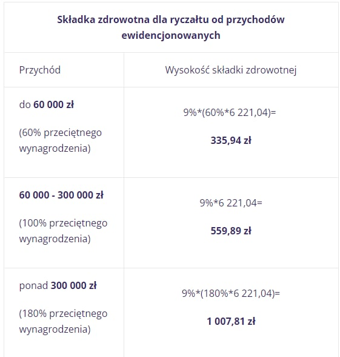

Налоги
Информация по налогам и социальным выплатам в Польше.
PIT - подоходный налог
Доступные системы налогообложения физических лиц (PIT - Personal Income Tax) для JDG по состоянию на 2022 год:
- Skala podatkowa (общий налог) - налог доступный по умолчанию при регистрации JDG и единственный доступный для работников по найму (UoP). Составляет 12% для доходов от 30 до 120 тыс. зл. и 32% - для всего, что выше. Доход до 30 тыс. зл. налогом не облагается. Этот налог позволяет уменьшить налогооблагаемый доход за счет необходимых для деятельности расходов (ноутбук, монитор, бухгалтерия, ПО и т.д.). Также позволяет подать налоговую декларацию вместе с супругом, что при отсутствии дохода у одного из супругов, уменьшает налогооблагаемый доход за счет дополнительных 30 тыс. зл. не облагаемого дохода.
- Podatek liniowy (пропорциональный налог) - некогда (до популяризации ryczałtu) самый выгодный налог в едином размере 19% вне зависимости от размера доходов для тех, значительная часть дохода которых попадала под 32% общего налога. Отличительной особенностью пропорционального налога (podatek liniowy) на фоне фиксированного (ryczałt) является возможность уменьшения налогооблагаемой суммы за счет расходов, так же как и в случае с общим налогом (skala podatkowa). Но, в отличии от общего налога, доход до 30 тыс. зл. налогом облагается, а совместная подача налоговой декларации с супругом недоступна.
- Ryczałt (фиксированный налог) - ныне очень популярный налог в размере от 2% до 17% в зависимости от вида деятельности JDG. Для программистов - 12%. Важный нюанс этого налога в том, что расходы никак не влияют на налогооблагаемый доход, т.е. налог рассчитывается исключительно на основании полученного дохода. Так как и при пропорциональном налоге (podatek liniowy), доход до 30 тыс. зл. налогом облагается, а подача налоговой декларации с супругом недоступна.
Некоторые моменты, на которые следует обратить внимание при выборе системы налогообложения:
- Планируемый годовой доход. При доходах ниже определенной суммы общий налог может быть выгоднее других вариантов за счет суммы необлагаемого дохода и возможности учесть расходы.
- Размер социальных взносов (ZUS) отличается в зависимости от выбранной системы налогообложения и суммы годового дохода.
- Вид деятельности при фиксированном налоге (ryczałt) определяет ставку налога. Кстати, один инвойс может быть выставлен на несколько видов деятельности с разными ставками.
- Планируется ли подача налоговой декларации совместно с супругом. Например, при отсутствии дохода у одного из супругов, сумма не облагаемого налогом дохода увеличивается в 2 раза.
- Наличие крупных расходов, связанных с деятельностью JDG, которые могут существенно снизить сумму налогооблагаемого дохода.
- Наличие детей, на которых распространяется скидка.
- Планируется ли ипотека. Размер доступного кредита при фиксированном налоге даже при высоких доходах во многих банках может быть низким, либо банк вообще может не обслуживать лица с такой системой налогообложения.
- Прочие скидки, которые доступны только для некоторых систем налогообложения.
Как узнать свой счет для оплаты налогов
Сгенерировать счет для оплаты подоходного налога можно на сайте налоговой на основе своего индентификатора NIP.
Налоговые калькуляторы
- https://www.podatki.wtf/
- https://calculla.com/polish_net_gross_earnings_calculator
- https://zarobki-kalkulator.pracuj.pl/kalkulator-wynagrodzen
- https://jakipit.pl/
- Калькулятор от участника чата. Скачивайте таблицу, импортируйте в Google Drive и подставляете свои данные.
Podatek dochodowy справка о незадолженности
Заказать на biznes.gov.pl. Справка платная.
Детально, что выбирать в визарде:
- Tryb składania wniosku -> We własnym imieniu
- Rodzaj wnioskodawcy -> firma (Важно!)
- Dane wnioskodawcy -> поля заполнятся автоматом на основании профиля
- Adres siedziby -> выбираем из списка или добавляем новый, если нет в списке
- Adres korespondencyjny -> то же самое
- Przeznaczenie zaświadczenia
- Cel w jakim chcesz otrzymać zaświadczenie -> цель - подача на побыт (ZEZWOLENIE NA POBYT CZASOWY)
- Zwolnienie z opłaty skarbowej -> Nie
- Gdzie złożysz otrzymane zaświadczenie -> Ужонд, где будете подаваться на побыт (например, Pomorski Urząd Wojewódzki w Gdańsku)
- Liczba egzemplarzy, które chcesz otrzymać -> 1
- Treść zaświadczenia -> выбираем все пункты
- Urząd odbierający wniosek
- Выбираем Ужонд Скарбовы по месту жительства
- Dodatkowa informacja -> платили ли налоги в другие Ужонды Скарбовы
- Sposób odpowiedzi urzędu -> elektronicznie w Biznes.gov.pl
- Opłata skarbowa
- Online должно быть проще, но Ужонд может не поддерживать этот вид, тогда надо платить через банковский перевод. Детали по банковскому переводу:
- Sposób odbioru zaświadczenia -> elektroniczne w Biznes.gov.pl (можно выбрать и другие варианты, и ожидать\забирать справку соответствующим образом)
VAT
VAT (Value-added tax) aka НДС (Налог на добавленную стоимость) — косвенный налог, который взимается с большинства продаж товаров и услуг. Проще говоря, НДС — это своеобразная надбавка к стоимости товара. Как правило, бизнес платит её не сам, а выставляет счёт конечному покупателю.
Для примера возьмем самую простую схему: Предприятие -> Ритейлер -> Покупатель
Предприятие продает Ритейлеру товар за 1000 зл и платит с продажи 230 зл VAT государству.
Ритейлер продает товар Покупателю за 3000 зл и должен заплатить 690 зл VAT, но поскольку 230 зл он уже заплатил Предприятию, то он берет эту сумму в зачет и должен перечислить государству только 460 зл. Т.е. заплатить VAT только с добавленной стоимости в 2000 зл(3000 - 1000).
Если Ритейлер покупает товар у Предприятия для себя и не может взять VAT в зачет, то он может обратиться к государству с просьбой вернуть уплаченные Предприятию 230 зл VAT обратно.
Внутрипольский VAT
Вы обязаны зарегистрироваться как плательщик VAT в следующих случаях:
- Ваш облагаемый доход превышает 200_000 злотых / год и фирма, с которой вы сотрудничаете, находится в Польше (польские заказчики).
- Один из кодов PKD вашей деятельности является консалтингом - 62.02.Z.
- Вы хотите списывать VAT с покупок на фирму (прим. Ноутбук, телефон, мебель и прочие вещи очень нужные для работы ИП).
Отследить, что вы были зарегистрированы можно на сайте. Это так называемый белый список - biała lista, это список всех плательщиков VAT.
VAT-EU
Если вы планируете работать на страны EU, вам необходимо зарегистрироваться как плательщик VAT-EU в обязательном порядке. При этом вам желательно иметь адрес деятельности и разрешение на него до подачи заявления. Экспорт услуг не облагается VAT, соответственно, вы в своем инвойсе не добавляете стоимость VAT. На инвойсах обязательно ставим отметку Reverse Charge.
Примечание: VAT платит заказчик в своей стране и по своим правилам. Но в месяцы, когда выставляли фактуры этим заказчикам, нужно подавать декларацию по ват как отчет.
После регистрации в базе плательщиков VAT EU (внёсек VAT-R) добавьте префикс PL к цифрам вашего NIP - это и будет ваш EU VAT number.
Проверить, что ваш контрагент является VAT-EU плательщиком можно здесь https://ec.europa.eu/taxation_customs/vies/
VAT в другие страны
Экспорт за пределы EU - вообще ничего не нужно. На инвойсах в поле "ставка VAT" указывайте np., и обязательно напишите Reverse Charge где-нибудь в комментариях.
VAT заметки
- После подачи заявления проверить зарегистрировали ли вас можно на podatki.gov.pl
- VAT составляет 23%
- Если работаешь с польской фирмой - то возникает внутрипольский ват, если с другой страной EU - то VAT EU, а если со страной вне EU зоны - то VAT нет вообще
- Отдельная страничка на biznes.gov.pl
ZUS

Оплата налога ZUS в месяц, в зависимости от прихода. При привышении порога, пересчет идет и на прошлые месяцы. Пример - в марте у вас сумма стала больше 60_000, а в декабре больше 300_000, это значит что за все 12 месяцев вы платите по 1007.81 zł.
ZUS состоит из 2 основных частей: медицинский (składka zdrowotna) и социальный (включает себя пенсионный, по утрате трудоспособности, фонд больничного (добровольный), фонд труда...)
Медицинский нужно платить всегда, даже если параллельно есть еще страховка по контракту, она даёт доступ к медицинскому обслуживанию для предпринимателя и членов семьи.
От уплат социального зависят социальные выплаты, в тои числе - декретные, больничные, будущая пенсия, но эти выплаты пропорциональны сумме с которой вы оплачиваете взносы. Первые 6 месяцев можно пользоваться льготой и не платить вообще - и, соответственно, выплаты тоже не положены. Позже 24 месяца можно платить малый зус - но это значит что для ZUS ваша условная заплата 30% от минимальной, т.е. 903 зл. После 30 месяцев начинается оплата полного ZUS - минимум 60% от средней заплаты, т.е. 3553,20 зл.
Оплата налога ZUS в месяц, в зависимости от прихода. При превышении порога, пересчет идет и на прошлые месяцы. Пример - в марте у вас сумма стала больше 60_000, а в декабре больше 300_000, это значит что за все 12 месяцев вы платите по 1007.81 zł.
Больше деталей на https://www.e-pity.pl/kalkulatory-podatkowe/skladki-zus-przedsiebiorcy/
FAQ
Оплата налогов на ryczałt
Ryczałt - это налог от дохода. Если дохода не будет в какой-то период\месяц, то ничего не платим. Но складки в ZUS мы обязаны оплачивать.